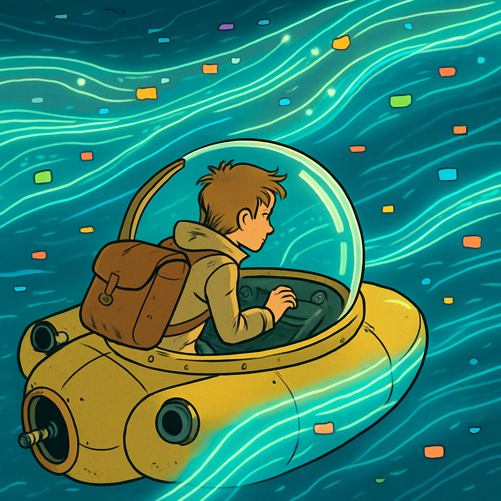

Microlearning
Streaming fühlt sich «leicht» an – kein physischer Datenträger, kein Versand. Aber hinter jedem Video steckt eine ganze Kette von Servern, Netzwerken und Endgeräten, die Energie verbrauchen.

Einige Zahlen zum Einordnen:
- Netflix und YouTube machen zusammen ca. 15% des gesamten globalen Internetverkehrs aus
- Ein 4K-Stream verbraucht ca. 7 GB pro Stunde – ein 720p-Stream nur ca. 0.9 GB
- Das ist ein Faktor 8 beim Datenvolumen – bei oft kaum sichtbarem Unterschied auf kleinen Bildschirmen
- Audio-Streaming (Spotify, Podcasts) verbraucht ca. 50–150 MB pro Stunde – ein Bruchteil von Video
Was viele nicht wissen: Auch das Netzwerk selbst verbraucht Strom. Jeder Router, jeder Switch, jede Glasfaserverbindung auf dem Weg vom Rechenzentrum zu deinem Gerät benötigt Energie. WLAN ist dabei effizienter als mobile Daten – 4G/5G verbraucht bis zu 5x mehr Energie als eine WLAN-Verbindung.
- Musik-Video auf YouTube laufen lassen, obwohl du nur den Song hörst? Unnötig.
- Autoplay auf Social Media = endlose Streams, die niemand bewusst gewählt hat
- Downloads statt Streaming spart Energie bei Inhalten, die du mehrfach konsumierst
Tat / Einstellung
Optimiere deine Streaming-Einstellungen – du sparst Datenvolumen und Energie, ohne wirklich auf Qualität zu verzichten.
Anleitung
- YouTube: Einstellungen → Videoqualität → «Datensparmodus» aktivieren oder manuell auf 720p setzen
- Netflix: Konto → Profil → Wiedergabe-Einstellungen → Datenverbrauch auf «Mittel» stellen
- Spotify: Einstellungen → Audioqualität → «Normal» statt «Sehr hoch» für Streaming unterwegs
- Social Media: Autoplay für Videos deaktivieren (Instagram, TikTok, Twitter/X)
Zusätzliche Quick Wins:
- Nutze WLAN statt mobile Daten, wenn möglich
- Lade Playlists und Podcasts vorab herunter, statt sie wiederholt zu streamen
- Höre Musik als Audio – nicht als Musikvideo
Reflexion
Ab welchem Punkt wird Bequemlichkeit zur Verschwendung – und wer definiert diese Grenze?
Niemand sagt, du sollst aufhören zu streamen. Aber die Defaults sind oft auf Maximum gestellt – 4K auf einem 13-Zoll-Bildschirm, Autoplay überall, Hintergrundvideos. Die Frage ist nicht «Verzicht oder nicht», sondern: Triffst du eine bewusste Wahl? Plattformen sind so designt, dass du möglichst viel konsumierst. Wer die Grenze nicht selbst definiert, lässt sie vom Algorithmus setzen.
Challenge
Berechne deinen monatlichen Streaming-CO₂-Fussabdruck.
Schätze, wie viele Stunden pro Woche du folgende Dienste nutzt, und rechne hoch:
- Video-Streaming (HD): ca. 36 g CO₂ pro Stunde
- Video-Streaming (4K): ca. 55 g CO₂ pro Stunde
- Audio-Streaming: ca. 7 g CO₂ pro Stunde
- Video-Calls (Kamera an): ca. 30 g CO₂ pro Stunde
Formel: Stunden pro Woche × 4.3 × CO₂-Wert = monatlicher Fussabdruck
Dokumentiere dein Ergebnis und überlege, wo du am einfachsten 20% einsparen könntest.